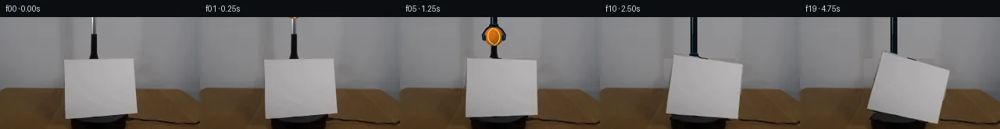

![首帧]()

Round 00
2026-11-04T19:12:49.991728+00:00像素候选变化代码 +249/−0inspection 更新
pixels 552fad40adf0feee · code d6c0f55d94f71b5e
查看本轮 generate.py 真实 diff
--- previous/generate.py
+++ current/generate.py
@@ -0,0 +1,249 @@
+#!/usr/bin/env python3
+"""Generate the 20-frame PixelWorld continuation using local pixel operations."""
+
+from pathlib import Path
+import math
+
+import cv2
+import numpy as np
+from PIL import Image, ImageDraw, ImageFilter
+
+import artifact_io
+
+
+ROOT = Path(__file__).resolve().parent
+W, H = 256, 144
+CARD_POLY = np.array([[82, 54], [170, 54], [176, 123], [83, 131]], np.int32)
+PIVOT = (129.0, 130.0)
+
+
+def polygon_mask(points, feather=False):
+ """Return a filled uint8 polygon mask."""
+ m = np.zeros((H, W), np.uint8)
+ cv2.fillConvexPoly(m, np.asarray(points, np.int32), 255, lineType=cv2.LINE_AA)
+ if not feather:
+ m[m > 0] = 255
+ return m
+
+
+def make_clean_plate(src):
+ """Reconstruct only the area hidden by the initial cardstock."""
+ base = src.copy().astype(np.float32)
+ hard = polygon_mask(CARD_POLY, feather=False) > 0
+
+ # The wall and table are interpolated row-by-row from real pixels just
+ # outside the sheet. Small multi-row averages retain the original light.
+ for y in range(51, 133):
+ x0, x1 = 77, 181
+ yy0, yy1 = max(0, y - 2), min(H, y + 3)
+ left = src[yy0:yy1, 69:79].mean(axis=(0, 1))
+ right = src[yy0:yy1, 181:191].mean(axis=(0, 1))
+ for x in range(78, 182):
+ if hard[y, x]:
+ u = (x - x0) / (x1 - x0)
+ base[y, x] = left * (1.0 - u) + right * u
+
+ base = np.clip(base, 0, 255).astype(np.uint8)
+
+ # Restore the part of the turntable that logically continues behind the
+ # sheet. It is deliberately subdued because almost all of it is occluded.
+ layer = Image.fromarray(base)
+ d = ImageDraw.Draw(layer, "RGBA")
+ d.ellipse((89, 119, 166, 143), fill=(10, 11, 10, 245))
+ d.ellipse((91, 119, 164, 136), fill=(25, 25, 23, 255))
+ d.ellipse((94, 121, 161, 133), fill=(31, 31, 28, 255))
+ d.arc((91, 119, 164, 141), 8, 172, fill=(54, 53, 47, 115), width=1)
+ # Preserve every observed source pixel outside the covered sheet.
+ rebuilt = np.asarray(layer).copy()
+ rebuilt[~hard] = src[~hard]
+ return rebuilt
+
+
+def rotated_card(src, angle_degrees):
+ """Warp the photographed card and its exact silhouette around the base."""
+ matrix = cv2.getRotationMatrix2D(PIVOT, -angle_degrees, 1.0)
+ texture = cv2.warpAffine(
+ src, matrix, (W, H), flags=cv2.INTER_CUBIC,
+ borderMode=cv2.BORDER_REPLICATE,
+ )
+ initial = polygon_mask(CARD_POLY, feather=False)
+ mask = cv2.warpAffine(
+ initial, matrix, (W, H), flags=cv2.INTER_LINEAR,
+ borderMode=cv2.BORDER_CONSTANT, borderValue=0,
+ )
+ return texture, mask
+
+
+def blend_rgb(background, foreground, alpha):
+ a = (alpha.astype(np.float32) / 255.0)[..., None]
+ return np.clip(background * (1 - a) + foreground * a, 0, 255).astype(np.uint8)
+
+
+def draw_grabber_and_ball(frame, t, center_y, show_ball=True):
+ """Draw a softly antialiased blue-black grabber and shaded orange ball."""
+ scale = 4
+ im = Image.fromarray(frame).resize((W * scale, H * scale), Image.Resampling.NEAREST)
+ overlay = Image.new("RGBA", im.size, (0, 0, 0, 0))
+ d = ImageDraw.Draw(overlay, "RGBA")
… diff truncated; 162 more lines …